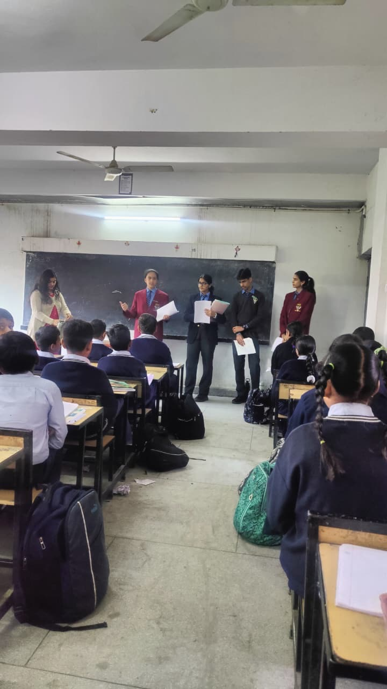
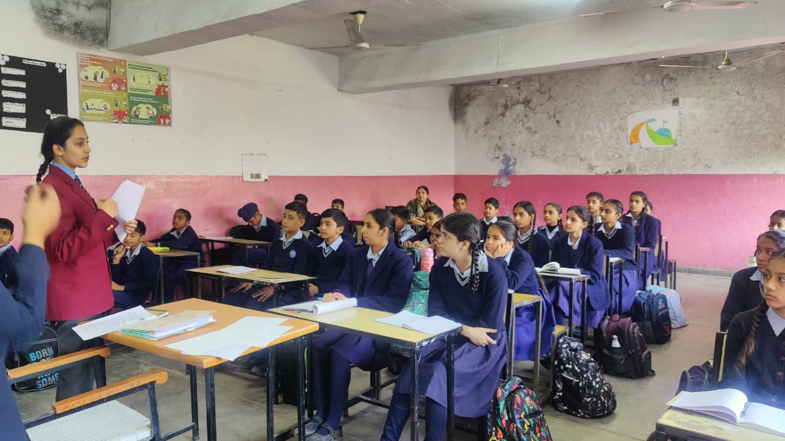
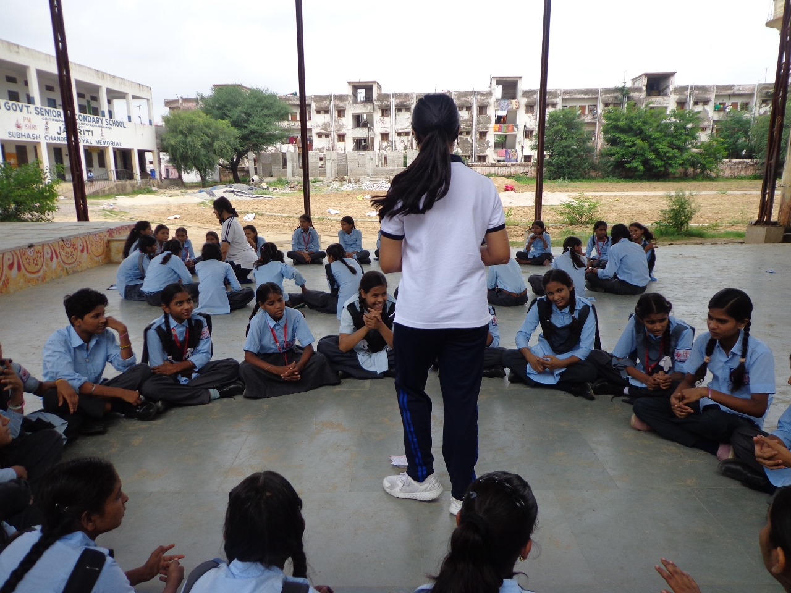

Diagnostic Camps
Free camps with licensed psychiatrists in underserved regions where private diagnosis is out of reach.
Learn more →The Scaffold Initiative is a youth-led organisation active across 22 countries. With a growing volunteer network, it works to promote academic inclusion for neurodivergent students, particularly in tier 2 and 3 regions, through free diagnostic camps, school partnerships, and post-diagnostic support. It also focuses on social inclusion and mental well-being through peer support groups, facilitating access to helplines, and destigmatisation sessions at partner schools.
The Scaffold Initiative is a youth-led organisation active across 22 countries. With a growing volunteer network, it works to promote academic inclusion for neurodivergent students, particularly in tier 2 and 3 regions, through free diagnostic camps, school partnerships, and post-diagnostic support.
It also focuses on social inclusion and mental well-being through peer support groups, facilitating access to helplines, and destigmatisation sessions at partner schools.
Free camps with licensed psychiatrists in underserved regions where private diagnosis is out of reach.
Learn more →Destigmatisation sessions, teacher orientation, and classroom culture work across 15+ schools.
Learn more →Peer support groups, helpline facilitation and school liaison so a diagnosis translates into accommodation.
Learn more →

